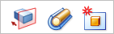
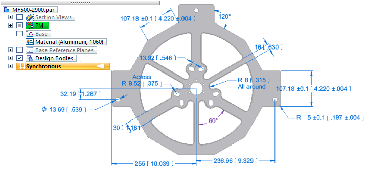
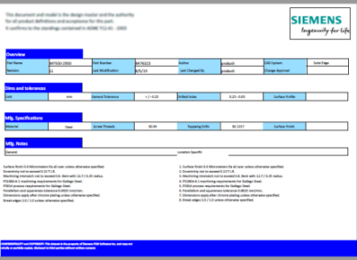
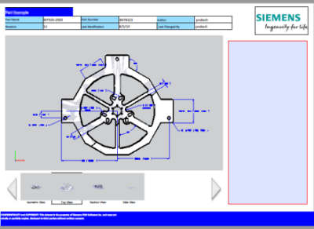

Solid Edge Model Based Definition (MBD)
What is model based definition?
Model based definition (MBD) is the practice of using the digital 3D CAD model and its technical specifications, bill of materials, design intent, and engineering configuration to fully define a product, rather than requiring additional 2D engineering drawings. MBD documentation consolidates all of the information needed to review, manufacture, and inspect a product, and consolidates it into a single, digital source that is shareable from design to the factory floor. It is published directly from the model, according to industry and military standards for digital product definition.
Model based definition in Solid Edge
In Solid Edge, model based definition documentation references the 3D CAD model through all the following:
-
Product Manufacturing Information (PMI), which is all of the geometric dimensions and tolerances (GD&T), annotations, technical notes, and other information required to manufacture a part or assembly. These specifications are added to the model directly using the dimension and annotation commands on the PMI tab.
-
PMI model views, which include sections that enable you to see into the interior of the model, created with the commands on the PMI tab→Model Views group.

Example:In Solid Edge, this PMI model view shows fixture base MF500-2900.par with a Top view orientation and all manufacturing dimensions and tolerances.

-
Associative references to text, document and model custom properties, and values inherent in the design intent of the model. You also can insert symbols into text fields. For examples, see Using property text and Using reference text.
-
All part and component information provided through an interactive assembly bill of material (BOM).
-
Sample 3D PDF templates that are customizable in the Solid Edge Template Editor using familiar drafting tools. You can add your logo, proprietary notices, company boilerplate, and other details specific to your company.
Publishing your MBD documentation
The published MBD documentation includes interactive 3D views of the CAD model, its PMI, metadata, bill of material (BOM), engineering configurations, design intent, authored notes, and all of the other information you added to the model that is required to review, manufacture, and inspect the product.
You can publish to 3D PDF format and to HTML using the PMI tab→3D PDF Publishing group→Publish 3D PDF command . For more information, see Publish to 3D PDF.
In published output, the same model data and all the PMI model views selected for publishing are consolidated into a single, protected, 3D PDF repository. Those you share the password with can review and add notes to the text area in the MBD data set.


When you publish the 3D CAD model, you also can include PMI in STEP AP242 format and JT format, which are readable by machining applications (CAM/CMM), such as Solid Edge CAM Pro. Published Solid Edge PMI are also used in human-readable documentation applications, such as Solid Edge Technical Publications.
A model based definition documentation set provides a technical data package and 3D model that satisfies standards for engineering and manufacturing your product. This is different from the content published by Solid Edge Technical Publications, which is suitable for creating marketing materials and service manuals for your products.
Using templates to define the layout of the MBD documentation
Many industries require adherence to standards for digital data-based processes. Solid Edge MBD complies with MIL-STD-31000B for Technical Data Packages (TDP), ASME Y 14.41, ISO 16792, DIN ISO 16792, and GB/T 24734.
Standards-compliant default templates for part and assembly are provided for you to publish your MBD documentation. The default location for these templates is the \Program Files\Siemens\Solid Edge 2023\Template\3D PDF Publish folder.
You can customize the sample templates or create your own using the PMI tab→3D PDF Publishing group→Template Editor command . For more information, see Create a 3D PDF template.
The Template Editor command is not available in the Teamcenter-managed environment.
Model based definition in the Teamcenter Integration for Solid Edge (SEEC)
To be able to save a published Solid Edge MBD document into Teamcenter, the Teamcenter preference SEEC_Save_Translation must be defined. The preference includes an entry to enable or disable saving model based designs to Teamcenter. By default, this row is disabled.
0:MBD:IMAN_manifestation:Image:image:1:Model_Based_Design
where <Action=0,1 to allow the 3D PDF file to be generated>:<Export Type>:<Relation>:<Dataset Type>:<Reference>:<Include Revision in file name?>:<User specified identifier>
Only the first enabled MBD entry found in the preference is used for publishing MBD PDF files.
See the Teamcenter Preferences section of the Teamcenter Integration for Solid Edge (SEEC) Guide for Users and Administrators for additional information related to defining the behavior for each specific translation file type.